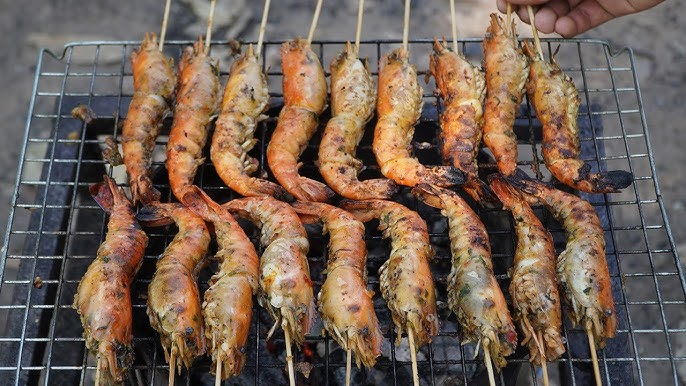
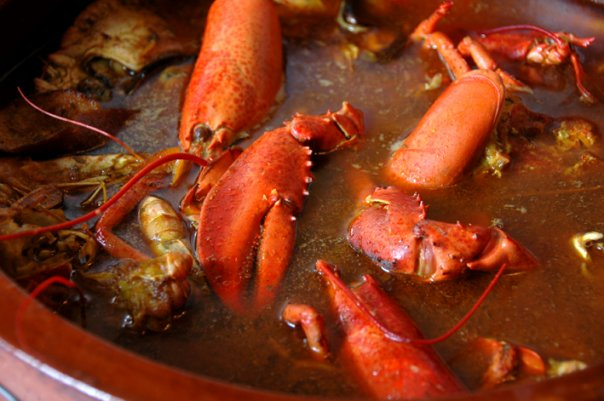
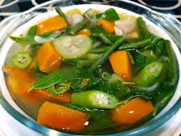
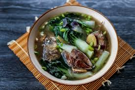
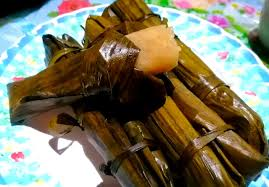
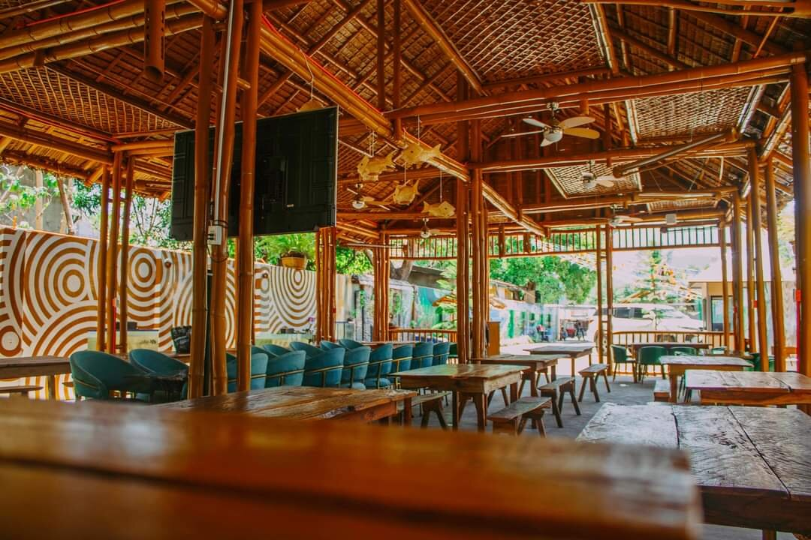

Food and Dining
Savor the flavors, where tradition and taste meet every meal
Antique offers a rich culinary experience that reflects its culture, heritage, and coastal abundance. Seafood is a highlight, with fresh catches like tilapia, prawns, crabs, and lobsters prepared in both traditional and modern dishes. Local favorites include kinilaw (fresh fish ceviche), laswa (vegetable soup), and budbod (sweet sticky rice dessert), offering a taste of authentic Antiqueño flavors.
Visitors can enjoy dining in seaside restaurants with fresh ocean views, cozy local eateries serving home-cooked specialties, or bustling town markets where street food and delicacies bring the flavors of the province to life. Don’t miss the chance to pair meals with local fruits like bananas, mangoes, and calamansi, or sip on freshly brewed coconut juice for a refreshing tropical treat. Antique’s food scene is not just about eating—it’s about experiencing the province’s culture, traditions, and warmth in every bite.
FOOD ADVENTURE CATALOGUE
Seafood Delight

Kinilaw (Raw Fish Ceviche)
Description: Fresh fish marinated in vinegar, calamansi, and spices
Where to Try: Coastal towns like Culasi, Pandan, and San Jose
Experience: Savor the tangy freshness of Antique’s daily catch

Grilled Prawns and Crabs
Description: Fresh seafood grilled over charcoal for smoky flavor
Where to Try: Beachside eateries in Mararison Island, Pandan Bay
Experience: Perfect for seaside dining with sunset views

Lobster and Fish Stews
Description: Rich, flavorful seafood soups and stews
Where to Try: Local restaurants in San Jose and Culasi
Experience: Authentic Antiqueño recipes handed down through generations
Traditional Antiqueño Dishes

Laswa (Vegetable Soup)
Description: Healthy soup made with local vegetables, herbs, and sometimes fish or shrimp
Where to Try: Homes, local eateries, town markets
Experience: A comforting taste of everyday Antiqueño life

Inubarang Manok (Chicken Stew with Coconut and Local Spices)
Description: Slow-cooked chicken with coconut milk, lemongrass, and spices
Where to Try: San Jose and Sibalom local restaurants
Experience: Rich, creamy, and aromatic, perfect for lunch or dinner

Bamboo Cooking / Tinolang Isda sa Kawayan
Description: Fish or meat slow-cooked inside bamboo for smoky flavor
Where to Try: Rural towns like Hamtic and Libertad
Experience: Traditional cooking method, deeply connected to nature and local culture
Local Desserts & Sweet Treats

Budbod (Sweet Sticky Rice Dessert)
Description: Sticky rice cooked with coconut milk, wrapped in banana leaves
Where to Try: Markets and roadside stalls in San Jose and Pandan
Experience: Perfect afternoon snack or souvenir treat
Puto (Steamed Rice Cakes)
Description: Soft, fluffy rice cakes, often served with cheese or salted egg
Where to Try: Town bakeries and local markets
Experience: Enjoy as breakfast, merienda, or snack while exploring the province

Maruya (Banana Fritters)
Description: Sweet, fried bananas coated in sugar
Where to Try: Pandan and Culasi street food stalls
Experience: Crispy on the outside, soft and sweet inside—a local favorite
Dining Experiences

Seaside Restaurants
Description: Fresh seafood and local dishes with ocean views
Where to Try: Mararison Island, Pandan Bay, Nogas Island
Experience: Sunset dining, seafood feasts, beach picnics

Town Markets and Eateries
Description: Affordable, authentic meals in bustling local settings
Where to Try: San Jose, Pandan, Culasi
Experience: Explore street food, try unique local flavors, meet locals

Homestays with Home-Cooked Meals
Description: Experience Antiqueño hospitality and traditional recipes
Where to Try: Sibalom, Libertad, Hamtic
Experience: Cooking demos, tasting meals made from fresh local ingredients
🍽️ MUST-TRY LOCAL DELICACIES AT A GLANCE
A quick reference to the 6 essential Antiqueño foods every visitor should experience — with exactly where to find them.